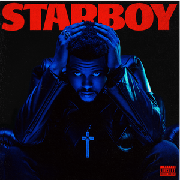
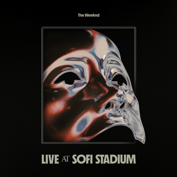
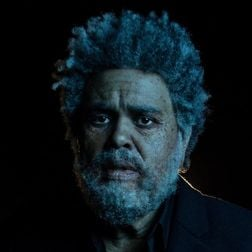
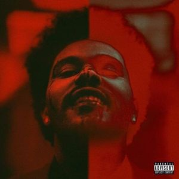

Discografía The Weeknd
Starboy Deluxe
Starboy (Deluxe) es la edición de lujo del tercer álbum de
estudio
"Starboy" del artista
canadiense The
Weeknd. El álbum original se lanzó 7 años antes, y después de que "Die for You" empezara a recibir
más
reconocimiento del público desde 2022 en TikTok, y un remix de la canción se lanzó el 24 de febrero
de 2023,
con la participación de Ariana Grande. Abel anunció la edición de lujo del álbum el 10 de marzo en
su tienda
en línea.
"Reminder (Remix)" y "Starboy (Remix)" se lanzaron 6-7 años antes y están incluidos en la lista de
canciones
junto con el remix de "Die for You". El álbum se lanzó el 14 de marzo de 2023, y la portada es la
misma que
la original, pero con un fondo negro sólido y texto en rojo.
El álbum original cuenta con la colaboración de Daft Punk, Lana Del Rey, Kendrick Lamar y Future; la
edición
de lujo incluye remixes de Ariana Grande, Kygo, A$AP Rocky y Young Thug.

Live at SoFi Stadium
After Hours Live at SoFi Stadium es el primer álbum en vivo
de The
Weeknd. Fue lanzado el 3
de marzo
de 2023 y fue grabado durante su concierto como parte de la gira "After Hours Til Dawn Tour" en el
SoFi
Stadium en Inglewood, California. El álbum contiene canciones de su repertorio de la gira, que
incluye
canciones de su discografía y varias canciones en las que colabora.

Dawn FM
Dawn FM es el quinto álbum de estudio de The Weeknd,
lanzado el 7
de enero de 2022. Como lo
afirmó el
propio The Weeknd, el álbum es una secuela directa de su cuarto álbum de estudio, "After Hours", que
se
lanzó casi dos años antes.
El álbum tiene un formato conceptual como un programa de radio, de ahí su título, con Jim Carrey
actuando
como el anfitrión y teniendo múltiples interludios hablados a lo largo del mismo. Curiosamente, The
Weeknd
tiene su propio programa de radio en Beats 1 llamado "Memento Mori", que comenzó en 2018 y se
utilizó para
promover el álbum en los meses previos a su lanzamiento.

After hours deluxe
After Hours (Deluxe) es la versión de lujo del cuarto álbum
de
estudio de The Weeknd, After
Hours. Fue
lanzado el 30 de marzo de 2020, 10 días después del lanzamiento de la versión estándar.
Esta versión incluye los bonus tracks “Nothing Compares”, “Missed You” y “Final Lullaby”. La versión
de lujo
sufrió algunos cambios, ya que Abel agregó remixes a cuatro de sus canciones en el álbum original,
que luego
se trasladaron a un EP separado titulado After Hours Remixes. El cambio final que se agregó fue
agregar Save
Your Tears (Remix) con Ariana Grande al álbum después de que After Hours cumpliera 2 años.
